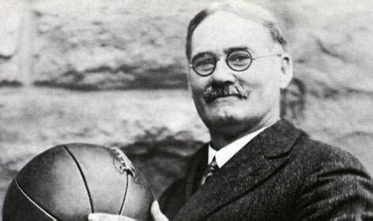
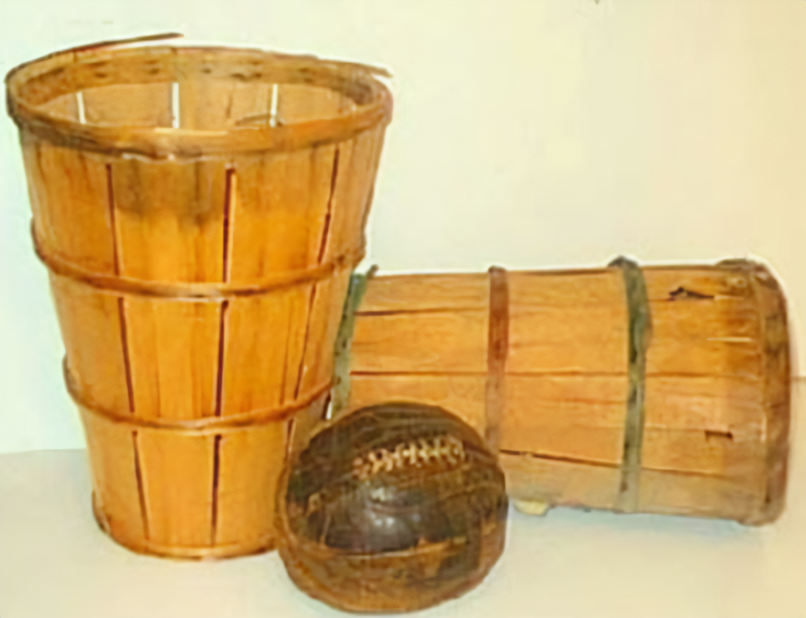

1. Origem do Basquete: O basquete foi criado por James Naismith em 1891, em Springfield, Massachusetts. Naismith foi desafiado a criar um jogo para manter seus alunos ativos durante o inverno.
2. As Primeiras Cestas: No início, as cestas eram feitas com cestos de pêssego, e os jogadores tinham que parar o jogo para retirar a bola a cada cesta marcada. Apenas em 1906 as cestas com aro de metal e rede foram introduzidas.
3. A Bola de Futebol: Antes da bola de basquete ser inventada, o esporte era jogado com uma bola de futebol. Foi apenas em 1894 que a bola oficial de basquete foi criada.
4. O Basquete Feminino: O basquete feminino começou logo após a invenção do esporte, em 1892, com as primeiras regras adaptadas para mulheres. O primeiro jogo feminino foi realizado em Smith College.
5. Michael Jordan - O Maior: Michael Jordan, considerado por muitos o maior jogador de todos os tempos, venceu 6 campeonatos da NBA e foi MVP das finais em todos eles. Seu impacto foi tão grande que ele ajudou a popularizar o esporte globalmente.
6. Basquete nas Olimpíadas: O basquete se tornou um esporte olímpico em 1936, durante os Jogos de Berlim. O jogo final foi realizado em um campo ao ar livre sob a chuva, e os EUA venceram o Canadá por 19 a 8.